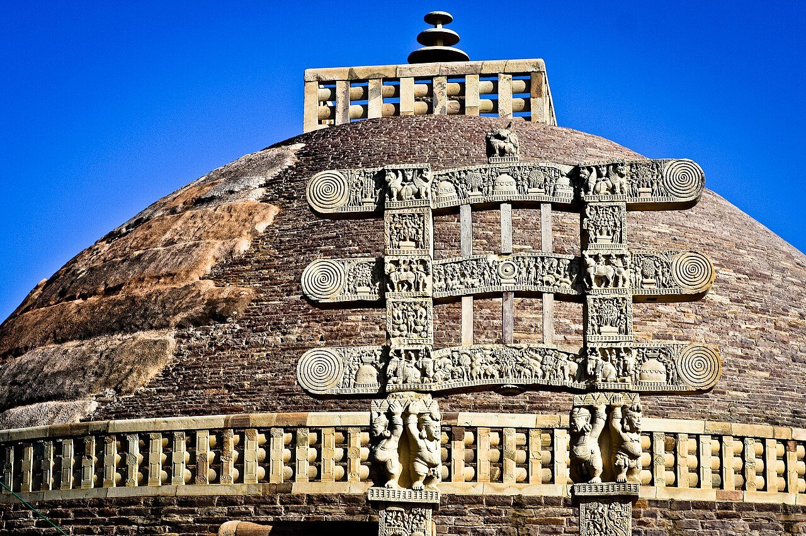
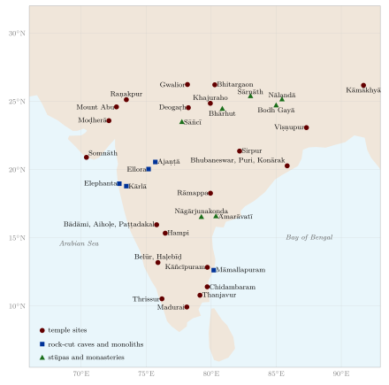

Chapter 1: Introduction: Architecture and Sculpture in the Indian Tradition¶
1.1 Building, Image and Text¶


The buildings and images of the Indian subcontinent form one of the longest continuous records of architecture and sculpture anywhere in the world. Planned brick cities of the Harappan civilisation, the polished stone pillars of Aśoka, the Buddhist stūpas (Figure 1.1) and rock-cut monasteries of the Deccan, the Hindu and Jain temples of every region, the mosques, tombs and gardens of the Sultanates and the Mughals, the stepwells of Gujarat and the timber houses of Kerala all belong to this record. So do the bronze and stone images made for worship, and the painted walls and manuscripts that accompanied them.
Alongside the monuments there is a body of technical literature in Sanskrit and, later, in regional languages. Its two most familiar names are vāstuśāstra, the science of building and site (from vāstu, “site, dwelling”, from the root vas, “to dwell”), and śilpaśāstra, the science of the crafts and especially of image-making. These texts describe how to choose and prepare a site, lay out a plan on a grid of squares, proportion a building or an image, and perform the rituals that accompany each stage of work. They are practical manuals, but they are also religious texts: they assume that a properly made temple or image is a fit dwelling for a deity, and that a house built according to rule brings good fortune to its occupants.
This volume treats both the texts and the buildings, and keeps the two distinct. The texts tell us what their authors thought ought to be done; standing buildings tell us what was actually done, and the two do not always agree. Throughout the book, prescriptions are reported as what a given text says, with its approximate date and region, not as statements of physical fact. The modern claims that vāstu works through “cosmic energy” or magnetism are examined, once and for the whole volume, in Chapter 2 (Section 2.15).
1.2 Regions and Materials¶
The geography of the subcontinent shaped its architecture. The great river plains of the Indus and the Gaṅgā have little building stone, and from the Harappan cities to the Mughal and colonial periods their monumental buildings were largely of baked brick, faced with plaster or carved terracotta, with stone brought from the hills for special purposes. The sandstone belts of central India and Rajasthan, the basalt of the Deccan plateau, the granites and gneisses of the southern peninsula, the marble of Rajasthan and Gujarat and the schists of Karnataka each favoured particular techniques and styles (Chapter 4). Timber, abundant in the Himalaya, the Western Ghats, Kerala and the North-east, was the principal material of early architecture everywhere, and remains so in those regions; bamboo, earth and thatch were, and are, the materials of most village houses. Climate imposed its own demands: heavy monsoon rains in the south-west and north-east favoured steep roofs and raised floors; the hot, dry north-west favoured thick walls, courtyards and screens; the cold mountains favoured compact, sun-facing houses. The architecture described in this volume should always be read against this background of regional diversity (Table 1.1; the principal sites are shown in Figure 1.2).

| Region | Principal materials | Representative monuments |
|---|---|---|
| Indus and Gaṅgā plains | Brick, terracotta, timber | Harappan cities; Bhitargaon; Sultanate and Mughal Delhi and Agra (with imported stone) |
| Central India | Sandstone | Sāñcī; Khajuraho; Gwalior |
| Rajasthan and Gujarat | Sandstone, marble | Moḍherā; Dilwārā; Raṇakpur; stepwells; havelīs |
| Odisha | Sandstone, khondalite, laterite | Bhubaneswar; Puri; Konārak |
| Bengal | Brick, terracotta | Sultanate mosques; Viṣṇupur temples |
| Western Deccan | Basalt | Kārlā; Ajaṇṭā; Ellora; Elephanta |
| Karnataka | Sandstone, granite, chloritic schist | Aihoḷe; Paṭṭadakal; Hoysaḷa temples; Vijayanagara |
| Tamil Nadu | Granite, brick, stucco | Māmallapuram; Thanjavur; Madurai |
| Kerala | Laterite, timber | Temples; nālukeṭṭu houses; Padmanābhapuram |
| Himalaya and North-east | Timber, stone, bamboo | Mārtaṇḍ; hill temples; Ladakhi monasteries; stilt houses |
1.3 The Textual Tradition¶
The surviving literature on architecture and image-making is large, uneven and, for the most part, difficult to date. Few texts have critical editions, many survive in more than one recension, and attributions to divine or legendary authors (Maya, Viśvakarman, Mānasāra) tell us nothing about historical authorship. The dates below follow current scholarship and are approximate; they are summarised in Table 1.2.
1.3.1 The Principal Texts¶
- Bṛhatsaṃhitā of Varāhamihira (6th century CE)
- An encyclopaedic work on astral science and omens from Ujjain. Several of its chapters concern building and images: chapter 53 on vāstuvidyā (house sites, the 81- and 64-square grids, the deities of the grid, and the effects of doors), chapter 54 on finding underground water, chapter 56 on temples (prāsāda), listing twenty named temple types, chapter 57 on a cement or glue (vajralepa), and chapter 58 on the proportions of images (Bhat 1981). It is one of the few early texts that can be dated with reasonable confidence, and it is the oldest systematic account of the vāstupuruṣamaṇḍala.
- Mayamata (c. 9th–12th century CE)
- A South Indian treatise on settlements, houses, temples and images, attributed to Maya. Bruno Dagens, its editor and translator, places it between the 9th and the 12th century and in the Tamil country, and shows that it is closely related to the architectural chapters of the Śaiva āgamas (Dagens 1994).
- Mānasāra (probably later than the Mayamata)
- A long South Indian text in seventy chapters covering measurement, site, villages and towns, houses, temples, gateways, furniture, vehicles and images. P. K. Acharya, who edited and translated it, dated it to c. 500–700 CE (Acharya 1934). Later scholars, among them Bruno Dagens in the introduction to his edition of the Mayamata, have generally regarded it as later than that text and as probably of the late medieval period (Dagens 1994), though no firm date can be given.
- Samarāṅgaṇasūtradhāra of Bhoja (11th century CE)
- An encyclopaedic work in 83 chapters attributed to the Paramāra king Bhoja of Dhārā (r. c. 1010–1055). It covers town planning, houses, palaces and temples (especially the northern types, including the bhūmija form associated with Paramāra territory), and has a well-known chapter on mechanical devices (yantra) (Gaṇapati Śāstrī 1924). Its chapters on temple design can be compared with the unfinished Paramāra temple at Bhojpur and the architectural drawings engraved around it (Chapter 4) (Hardy 2015).
- Aparājitapṛcchā of Bhuvanadeva (c. 12th–13th century CE)
- A western Indian (Gujarat) text in the tradition of the Māru-Gurjara builders, important for northern temple types, iconography and the classification of temples (Mankad 1950).
- Prāsādamaṇḍana and Rājavallabha of Maṇḍana (15th century CE)
- Works by the master builder (sūtradhāra) Maṇḍana, who worked at the court of Rāṇā Kumbhā of Mewar; they are still used by the Sompurā temple builders of Gujarat and Rajasthan.
- Śilpaprakāśa of Rāmacandra Kaulācāra (Odisha; date disputed)
- An Odishan text on temple architecture with a strong Tantric orientation, edited and translated by Alice Boner and Sadāśiva Rath Śarmā (Boner and Rath Śarmā 1966).
- Śilparatna of Śrīkumāra (Kerala, 16th century CE)
- A compendium of architecture, sculpture and painting from Kerala; together with the Tantrasamuccaya (15th century) and the Manuṣyālayacandrikā (on houses, 16th century), both in Sanskrit, it represents the Kerala tradition.
- Viṣṇudharmottara Purāṇa, book 3, the Citrasūtra (c. 5th–8th century CE; proposed dates vary)
- The best-known Sanskrit text on painting, which also treats image-making and dance; see Chapter 14 (Sivaramamurti 1978).
To these must be added the āgamas and saṃhitās of the Śaiva (e.g. Kāmikāgama) and Vaiṣṇava (Vaikhānasa and Pāñcarātra) traditions, which contain chapters on temple building, image-making and consecration and which still govern ritual in many South Indian temples; the architectural sections of some Purāṇas (notably the Matsya and Agni Purāṇas); and the Arthaśāstra (composite, c. 50 BCE–300 CE; the traditional attribution to Kauṭilya, minister of Candragupta Maurya, places it c. 300 BCE), which describes fortified towns (Chapter 8) (Olivelle 2013).
| Text | Date (approx.) | Region and principal subject |
|---|---|---|
| Arthaśāstra | c. 50 BCE–300 CE | North India; fortified towns (book 2) |
| Bṛhatsaṃhitā | 6th c. CE | Ujjain; house sites, temples, images (chs 53–58) |
| Viṣṇudharmottara (Citrasūtra) | c. 5th–8th c. | North India; painting and images |
| Mayamata | c. 9th–12th c. | Tamil country; settlements, houses, temples, images |
| Samarāṅgaṇasūtradhāra | 11th c. | Mālwā (Bhoja); towns, palaces, temples, machines |
| Aparājitapṛcchā | c. 12th–13th c. | Gujarat; northern temple types, iconography |
| Mānasāra | medieval (disputed) | South India; comprehensive |
| Prāsādamaṇḍana | 15th c. | Mewar; temples (Māru-Gurjara) |
| Śilparatna | 16th c. | Kerala; architecture, sculpture, painting |
Scholarly Note: Texts and Buildings
Art historians have long debated how far the surviving texts actually guided builders. Many of the great temples were built before the texts that are now most often cited, and some texts describe forms that do not survive, or survive only in regions far from where the text was written. Adam Hardy and Michael Meister have shown that the most useful approach is to read the texts alongside the buildings: the texts preserve a technical vocabulary and some of the design procedures of the builders, but the buildings themselves are the primary evidence for the history of architecture (Hardy 2007; Meister et al. 1983).
1.4 Ideas Behind the Buildings¶
Several ideas run through the texts and help to explain the forms of Indian religious architecture. They are ideas held by the authors of the texts and by the communities who built and used the buildings; they are not claims about physics.
1.4.1 The Grid and the Square¶
The texts prescribe that every building, from a house to a town, be laid out on a square grid, the vāstupuruṣamaṇḍala, whose squares are assigned to deities, with Brahmā at the centre. The myth of the vāstupuruṣa, the being pinned to the ground by the gods, explains why the site must be propitiated before building (Chapter 2). Stella Kramrisch made this diagram the key to her influential interpretation of the Hindu temple (Kramrisch 1946).
1.4.2 The Temple as Mountain, House and Body¶
The temple is described in the texts as the house (prāsāda, devagṛha) of a god who is present in the image. Its superstructure is often compared to a mountain, especially Meru, and its parts carry the names of the parts of a body: in the northern texts the lowest moulding of the base is the “hoof” (khura), the wall the “shank” (jaṅghā), the top of the tower the “shoulder” (skandha), above which come the “neck” (grīvā) and the “head” (śiras); in the southern texts the wall and pillar zone is the “foot” (pāda). These comparisons are found in the texts themselves; more elaborate correspondences between temple and human body found in modern books are often the authors’ own.
1.4.3 The Image as a Dwelling of the Deity¶
Images made for worship are consecrated in a ritual of installation (pratiṣṭhā), which in many traditions includes the “establishment of breath” (prāṇapratiṣṭhā) and the opening of the eyes. The proportions, gestures and attributes prescribed by the texts were intended to make an image fit to receive the deity. This explains the importance of iconographic rules (Chapters 11 and 12); it does not mean that every image actually followed them (Davis 1997).
1.4.4 Buddhist and Jain Architecture¶
The ideas just described are those of the Brahmanical texts. Buddhist and Jain communities built on different premises. The Buddhist stūpa is a monument over relics; the monastery (vihāra) and the hall of worship (caitya) answer to the needs of a monastic community; and Jain temples are designed for the worship of the tīrthaṅkaras, often in multiple shrines and in sacred “temple cities” on hills such as Śatruñjaya and Girnār. Many builders worked for patrons of all religions, and Buddhist, Jain and Hindu buildings share techniques and ornament, but they should not be read as variants of a single “Hindu” scheme.
1.5 Architecture, Sculpture and the Other Arts¶
The Indian arts were closely connected, a point made in a well-known passage of the Viṣṇudharmottara Purāṇa on the dependence of image-making on painting, dance and music (Chapter 14, Section 14.3). Temples were built for music and dance as well as worship, with halls and pavilions for performance, and their sculpture draws on the stances and gestures of dance (Chapter 13). Poets described palaces, temples and cities in elaborate verse, and inscriptions on buildings are often fine Sanskrit or Tamil poems; Persian poetry was inscribed on Mughal monuments. Painting, textiles, metalwork and woodwork shared motifs with architecture. A building in India was rarely the work of a single art: the Tāj Mahal combines architecture, gardens, calligraphy, inlay and carving; a South Indian temple combines architecture, sculpture, painting, bronze-casting, music, dance and ritual.
1.6 The Builders¶
1.6.1 Architects, Masons and Sculptors¶
The texts use several terms for the master builder: sthapati (master architect), sūtradhāra or sūtragrāhin (“holder of the cord”, the surveyor who lays out the plan), takṣaka (carver) and vardhaki (carpenter or builder). The Mayamata and Mānasāra describe the qualities of each and how they should work together. Inscriptions sometimes name the architects and sculptors of particular buildings; the Bṛhadīśvara temple at Thanjavur, for example, records the name of its chief architect (Chapter 5), and Jain temples in western India record the names of their sūtradhāras (Chapter 4, Section 4.14).
1.6.2 Craft Communities and Caste¶
In most periods architecture and image-making were hereditary occupations of particular communities. In South India the artisan groups known in Tamil as Kammāḷar (in Karnataka and Andhra as Viśvakarma or Pāñcāla) include smiths, carpenters, stone-carvers and bronze-casters and claim descent from Viśvakarman, the divine craftsman of the Ṛgveda; in western India the Sompurā Brahmins are the hereditary temple architects, and the Sūtār and Salāṭ communities are carpenters and stone-workers. These identities gave the crafts continuity, but they also expressed the hierarchy of caste. The dharmaśāstra literature ranks most craft work low, and the vāstu texts themselves allot sites, house sizes and even soil colours according to varṇa: the Bṛhatsaṃhitā and the Mayamata, for example, prescribe different house dimensions for brāhmaṇas, kṣatriyas, vaiśyas and śūdras, assign soils of different colours to them (Chapter 2), and, like the Arthaśāstra, place those regarded as impure at the edges of a settlement (Chapter 8). How these prescriptions corresponded to the real layout of villages is discussed in Chapter 10 (Section 10.3). Artisan communities in turn contested their status; from the medieval period Viśvakarma groups in the south claimed brāhmaṇa rank. An honest account of the tradition must keep both facts in view: the extraordinary skill transmitted within these communities, and the social order that restricted who could do what, and where people could live.
1.6.3 Transmission¶
Skills were passed on largely within families and workshops, through apprenticeship rather than through the study of texts. Texts were known to some master builders, and some families preserved manuscripts, but much of the working knowledge of proportion and construction was carried in drawings, templates, measuring rods and memory. The modern continuity of the tradition is real: the Sompurā families still build temples in the Māru-Gurjara manner, and in Tamil Nadu V. Ganapati Sthapati (1927–2011), who headed the Government College of Architecture and Sculpture at Mamallapuram, trained a generation of sculptors and architects in the Drāviḍa tradition (Ganapati Sthapati 2002). But modern practice has also been reshaped by printed editions, government schools of architecture and sculpture, and the expectations of modern patrons.
1.7 A Brief History¶
Table 1.3 gives an outline of the periods discussed in this volume; a fuller chronology is given at the end of the book.
| Period | Principal developments |
|---|---|
| c. 2600–1900 BCE | Mature Harappan (Indus) cities: Mohenjo-daro, Harappā, Dholāvīrā, Lothal; baked-brick architecture, drains, wells |
| c. 1500–500 BCE | Vedic period: timber and thatch buildings (none survive); brick fire altars described in the Śulbasūtras |
| c. 3rd c. BCE | Maurya: Aśokan pillars, Barābar caves, the first brick stūpas at Sāñcī and elsewhere |
| c. 2nd c. BCE–3rd c. CE | Stūpas of Bhārhut, Sāñcī and Amarāvatī; rock-cut caitya halls of the western Deccan (Bhājā, Kārlā); Kuṣāṇa sculpture at Mathurā and Gandhāra |
| c. 4th–6th c. CE | Gupta and Vākāṭaka: early stone temples (Sāñcī temple 17, Deogaṛh), Udayagiri caves, Ajaṇṭā |
| c. 6th–8th c. | Early Cālukya temples (Aihoḷe, Bādāmi, Paṭṭadakal); Pallava monuments at Māmallapuram and Kāñcīpuram; Elephanta |
| c. 8th–10th c. | Kailāsa temple at Ellora; Pratīhāra and early Odishan temples |
| c. 10th–13th c. | Khajuraho, Bhubaneswar, Moḍherā, Dilwārā; Chola temples and bronzes; Hoysaḷa temples; Konārak |
| 1190s–16th c. | Delhi Sultanate (Qutb complex), regional sultanates of Gujarat, Bengal, Mālwā and the Deccan; Vijayanagara |
| 16th–18th c. | Mughal architecture (Humāyūn’s tomb, Fatehpur Sīkrī, Tāj Mahal); Nāyaka temples in Tamil Nadu; Rajput palaces; Jaipur |
| 19th–20th c. | Colonial and Indo-Saracenic buildings; New Delhi; modern Indian architecture; continuing temple building |
1.7.1 The Harappan Cities¶
The cities of the Harappan or Indus civilisation, at their height c. 2600–1900 BCE, are the earliest planned towns in South Asia, with streets on roughly cardinal alignments, houses of standardised baked brick, covered drains and, at Dholāvīrā, an elaborate system of reservoirs (Kenoyer 1998; Possehl 2002). Their plans, and the open question of how much of their practice passed into later Indian building, are discussed in Chapter 8. The Harappan script is undeciphered, so the planners’ own ideas are unknown.
1.7.2 Vedic Altars and the Śulbasūtras¶
No Vedic buildings survive; houses and halls were built of timber, bamboo and thatch. The Śulbasūtras (“rules of the cord”), appendices to the ritual manuals of the Vedic schools (Baudhāyana, Āpastamba, Kātyāyana, Mānava; c. 8th–2nd centuries BCE, the earliest perhaps c. 800–500 BCE), give geometrical instructions for laying out brick fire altars of prescribed shapes and areas, including the great bird-shaped altar of the agnicayana, built of five layers of bricks (Sen and Bag 1983; Staal 1983). They contain the earliest Indian statement of the relation between the sides and the diagonal of a rectangle (the theorem now named after Pythagoras), constructions for squares of a given area, the conversion of a square into a circle of approximately equal area, and a good approximation to \(\sqrt{2}\) (Plofker 2009). The Śulbasūtras are texts on ritual geometry, not on architecture (their mathematics is treated in Volume 11, Gaṇita); but they show that the cord-and-peg methods later used to lay out buildings had a long history.
1.7.3 Mauryan Stone and the Buddhist Monuments¶
Monumental stone architecture and sculpture appear in the Maurya period. The polished sandstone pillars of Aśoka (r. c. 268–232 BCE), with bell-shaped capitals and animal crowns, and the caves of the Barābar and Nāgārjunī hills near Gayā, cut for the Ājīvika ascetics under Aśoka and his grandson Daśaratha, are the earliest surviving examples. Over the following centuries Buddhist and Jain communities, with merchants, guilds, monks and nuns as donors, built stūpas, monasteries and rock-cut halls whose inscriptions record thousands of individual gifts. The stūpas of Bhārhut and Sāñcī and the caitya halls of the Western Ghats are discussed in Chapter 3.
1.7.4 Temples¶
The earliest surviving free-standing stone temples date from the Gupta period, in the 5th and early 6th centuries CE: small flat-roofed shrines such as temple 17 at Sāñcī, and the Daśāvatāra temple at Deogaṛh, which had a tower. From the 7th century the northern (Nāgara) and southern (Drāviḍa) temple forms were fully established, and the next six centuries saw the great regional traditions surveyed in Chapters 4 and 5.
1.7.5 Indo-Islamic Architecture¶
From the 1190s the Delhi Sultanate, and later the regional sultanates and the Mughal empire, introduced the mosque, the tomb, the madrasa and the walled garden, together with the true arch, the dome and new uses of lime mortar, glazed tile and inlay. These buildings were made by Indian masons and craftsmen working alongside architects from Iran and Central Asia, and they combined imported forms with local techniques and ornament. They are an integral part of the history of Indian architecture, and are discussed in Chapter 6; stepwells and gardens of the period appear in Chapter 9, and Mughal and Rajput cities in Chapter 8.
1.7.6 Colonial and Modern Architecture¶
Under British rule, European classical and Gothic buildings were joined in the late 19th century by the “Indo-Saracenic” style, which combined Mughal and Rajput forms with modern construction, and in the 20th century by the new imperial capital of New Delhi (Metcalf 1989). After independence, Le Corbusier at Chandigarh and Indian architects such as B. V. Doshi, Charles Correa and Laurie Baker sought ways of building that responded to Indian climate, materials and ways of life. Both periods are described in Chapter 7. Temple building in the traditional manner, meanwhile, has continued and expanded, in India and in the diaspora (Chapter 4).
1.8 Buildings as Historical Evidence¶
Buildings are documents. Their inscriptions record dates, rulers, donors, architects, endowments and disputes; their sculpture and painting show dress, ornament, musical instruments, weapons, ships, houses and the activities of daily life; their construction reveals technology, the organisation of labour and the movement of materials; and their alteration over time, by repair, enlargement, conversion and destruction, records the history of the communities that used them. Temple inscriptions are among the principal sources for the economic and social history of medieval South India, and the donative inscriptions of the early Buddhist sites are a principal source for the social history of the period. Conversely, buildings have also been used as evidence for claims about the past that the evidence does not support, as in some of the myths discussed in this volume. Reading buildings well requires both an understanding of how they were made and attention to the documents they carry.
1.9 Patronage¶
Monumental building required sustained funding. Inscriptions show several kinds of patron:
-
Kings and queens, for whom temple building was an act of merit and a statement of power: the Chola king Rājarāja I at Thanjavur, the Cālukya queen Lokamahādevī at Paṭṭadakal, the Gaṅga king Narasiṃha I at Konārak.
-
Ministers and merchants, especially in western India: the Jain ministers Vimala, and Vastupāla and Tejapāla, who built the Dilwārā temples at Mount Abu, and the merchant Dharaṇa Śāh at Raṇakpur.
-
Monks, nuns, lay donors and guilds, who paid for individual pillars, railings and caves at Buddhist sites; the inscriptions at Sāñcī and Kārlā record many such gifts.
-
Local communities and temple institutions, which maintained tanks, irrigation works and rest-houses, often from endowments of land recorded in inscriptions.
Under the Sultanates and the Mughals, mosques, tombs, caravanserais, stepwells and gardens were built by rulers, nobles and, notably, by royal women, such as Bega Begum (Ḥājī Begum), traditionally credited with Humāyūn’s tomb, Nūr Jahān, who built her father’s tomb at Agra, and Jahānārā; and charitable endowments (waqf) supported their upkeep.
1.10 Indian Architecture beyond India¶
Buddhist and Hindu architecture and sculpture travelled with religious and commercial networks. In Sri Lanka, Myanmar, Thailand, Cambodia, Vietnam (Champa) and Indonesia, local builders developed temples and stūpas that drew on Indian models while remaining distinctively their own: Borobudur in Java (late 8th–early 9th century), a stepped Buddhist monument with some 2,670 relief panels and over 500 Buddha images; Prambanan in Java (9th century); and Angkor Wat in Cambodia (early 12th century), the largest of the Khmer temples. Nepal and Tibet developed their own traditions of temple and monastery building in close contact with India. These buildings are best understood as independent regional traditions in dialogue with India, not as Indian buildings abroad.
1.11 The Modern Study of Indian Architecture¶
The systematic study of Indian architecture by modern methods began in the early 19th century. Ram Raz, a South Indian official, published Essay on the Architecture of the Hindus (1834), the first attempt to explain the southern building texts with measured drawings, made with the help of traditional builders (Ram Raz 1834). The Scottish merchant James Fergusson travelled widely in India in the 1830s and 1840s and wrote the first general history, History of Indian and Eastern Architecture (1876) (Fergusson 1876). His classification of buildings by religion and race (“Buddhist”, “Jaina”, “Dravidian”, “Indo-Aryan”) and his view that Indian architecture had declined after an early high point were influential and long contested.
The Archaeological Survey of India was founded in 1861 under Alexander Cunningham, who surveyed hundreds of sites in northern India and identified many places mentioned by the Chinese pilgrims. James Burgess documented the caves and temples of western and southern India. Under John Marshall (Director-General 1902–1928) the Survey excavated Taxila, Sāñcī, Mohenjo-daro and Harappā, and began a programme of conservation under the Ancient Monuments Preservation Act of 1904.
European writers of the 19th century often judged Indian sculpture and architecture harshly, measuring them against Greek and Renaissance models; Partha Mitter has traced how these prejudices formed (Mitter 1977). In the early 20th century E. B. Havell and Ananda Coomaraswamy reacted against them, insisting on the religious and aesthetic values of Indian art (Havell 1913); Coomaraswamy’s History of Indian and Indonesian Art (1927) remains a classic (Coomaraswamy 1927). Stella Kramrisch’s The Hindu Temple (1946) read the temple through the texts as a symbolic form (Kramrisch 1946), and Percy Brown’s two volumes on Buddhist and Hindu and on Islamic architecture became standard surveys (Brown 1942a, 1942b).
Since the 1960s, scholars such as M. A. Dhaky, Krishna Deva, Michael Meister, George Michell, Adam Hardy and Bruno Dagens have combined close study of buildings with the reading of texts and inscriptions, producing the regional volumes of the Encyclopaedia of Indian Temple Architecture and detailed studies of particular traditions (Meister et al. 1983; Hardy 2007; Michell 1977). Historians of Indo-Islamic architecture, among them Catherine Asher, Ebba Koch and Finbarr Barry Flood, have transformed the understanding of Sultanate and Mughal building (Asher 1992; Koch 1991; Flood 2009). Archaeologists working on the Harappan and early historic cities have provided a firmer chronology for the early periods. This volume relies on their work throughout.
1.12 Heritage and Conservation¶
India’s architectural heritage is protected by law at national and state levels. The Ancient Monuments and Archaeological Sites and Remains Act of 1958 empowers the Archaeological Survey of India to protect several thousand monuments of national importance, and state departments protect many more. India has more than forty sites on the UNESCO World Heritage List, including Ajaṇṭā, Ellora, Elephanta, Khajuraho, Konārak, Māmallapuram, Paṭṭadakal, Hampi, the Great Living Chola Temples, the Qutb complex, Humāyūn’s tomb, Fatehpur Sīkrī, the Agra Fort, the Tāj Mahal, the Rāṇī kī Vāv, Dholāvīrā and the Rāmappa temple (Table 1.4).
| Site | Year | Site | Year |
|---|---|---|---|
| Ajaṇṭā caves | 1983 | Sāñcī Buddhist monuments | 1989 |
| Ellora caves | 1983 | Humāyūn’s tomb, Delhi | 1993 |
| Agra Fort | 1983 | Qutb Mīnār and its monuments | 1993 |
| Tāj Mahal | 1983 | Mahābodhi temple, Bodh Gayā | 2002 |
| Sun temple, Konārak | 1984 | Champaner-Pavagadh | 2004 |
| Monuments at Māmallapuram | 1984 | Chhatrapati Shivaji Terminus | 2004 |
| Churches and convents of Goa | 1986 | Red Fort complex, Delhi | 2007 |
| Fatehpur Sīkrī | 1986 | Jantar Mantar, Jaipur | 2010 |
| Hampi | 1986 | Hill forts of Rajasthan | 2013 |
| Khajuraho | 1986 | Rāṇī kī Vāv, Pāṭaṇ | 2014 |
| Elephanta caves | 1987 | Nālandā | 2016 |
| Great Living Chola Temples | 1987, 2004 | Historic city of Ahmadābād | 2017 |
| Paṭṭadakal | 1987 | Jaipur city | 2019 |
| Dholāvīrā | 2021 | Rāmappa temple | 2021 |
| Hoysaḷa temples | 2023 | Santiniketan | 2023 |
Conservation in India faces particular problems. Many great temples are “living” monuments, in continuous worship, whose communities expect them to be renovated, painted, extended and reconsecrated; the traditional practice of renewal (jīrṇoddhāra) can conflict with the conservationist’s aim of preserving historic fabric, as debates over the sandblasting, replastering and rebuilding of old temples show. Many monuments are threatened by urban growth, pollution, encroachment and neglect, and unprotected vernacular buildings are disappearing rapidly. Since 1984 the Indian National Trust for Art and Cultural Heritage (INTACH), a non-governmental body, has listed unprotected historic buildings in many towns, pressed for heritage regulations in cities and promoted the repair of old buildings with traditional materials such as lime; and the demolition of notable modern buildings has extended the debate to the architecture of the 20th century (Chapter 7).
Theft has removed many images from their temples. Bronzes and stone sculptures stolen from Indian temples have been sold through the international art market; in recent years several have been identified in museum collections abroad and returned, among them a Chola bronze Naṭarāja returned from the National Gallery of Australia in 2014. Photographic archives, such as that of the French Institute of Pondicherry, have been important in identifying stolen images.
Monuments have also been at the centre of political and religious conflict. Medieval rulers of every religion destroyed or appropriated the shrines of their enemies, and the memory of such acts has been mobilised in modern politics. The most consequential modern case was the demolition in 1992 of the Babri Masjid at Ayodhya, a 16th-century mosque claimed to stand on the birthplace of Rāma, which led to widespread violence; after decades of litigation, the Supreme Court of India in 2019 awarded the site for the building of a temple and directed that land be given elsewhere for a mosque. Historians and archaeologists have an important responsibility in such disputes: to state clearly what the evidence shows and does not show, and to resist the use of the past as a weapon in present conflicts.
1.13 Measurement¶
The texts measure buildings and images in units based on the human body. The basic unit is the aṅgula (“finger”), defined as eight yava (barley grains); 12 aṅgulas make a vitasti (span), 24 a hasta or kiṣku (forearm, cubit) and four hastas a daṇḍa (rod). The texts also allow cubits of 25, 26 and 27 aṅgulas for different kinds of work, and the absolute value of the aṅgula varied between periods and regions. For images, a unit relative to the image itself is used (Chapter 11). The equivalences of these units in centimetres given in modern books are approximations.
1.14 Plan of this Volume¶
The first part of the book deals with architecture, beginning with the texts and then following the buildings roughly in historical order. Chapter 2 explains the principles set out in the vāstu texts and examines the modern claims made for them. Chapter 3 covers the oldest surviving religious monuments, the stūpas, monasteries and rock-cut halls of the Buddhists, Jains, Ājīvikas and Hindus. Chapter 4 describes the main temple forms, and Chapter 5 studies a selection of great temples, Hindu and Jain, region by region. Chapter 6 is devoted to the mosques, tombs and shrines of the Sultanates and the Mughals, and Chapter 7 to palaces and to the architecture of the colonial and modern periods. Three thematic chapters follow: towns and cities from the Harappan period to Jaipur and the modern capitals (Chapter 8), tanks, stepwells, dams and gardens (Chapter 9), and houses and vernacular architecture (Chapter 10). The second part deals with images and painting: the principles of image-making (Chapter 11), iconography (Chapter 12), the regional schools of sculpture (Chapter 13) and painting (Chapter 14). Maps of the principal sites are given in Figures 1.2, 6.1 and 13.1.
A Note on Transliteration¶
Sanskrit, Pali and Prakrit terms and the titles of texts are given in IAST. Tamil and Malayalam words follow the conventions of the Tamil Lexicon used in most scholarly writing: ē and ō mark the long vowels, which these languages distinguish from short e and o; ḻ is the retroflex approximant (as in kiḻakkini), ḷ the retroflex lateral, ṟ the alveolar r and ṉ the alveolar n (as in Peruntaccaṉ). Hindi, Gujarati, Bengali and Odia words are given in IAST, usually without the final -a that is not pronounced (havelī, bāolī, deuḷ). Persian and Arabic words follow a simplified form of the usual scholarly system: a macron marks a long vowel, ʿ the consonant ʿayn and ʾ the glottal stop, a dot below distinguishes consonants that English does not (ḥ, ṣ, ẓ, ṭ), q is the uvular stop, and the Persian connecting vowel is written -i (Dīwān-i Khāṣṣ). Well-known place names (Delhi, Agra, Thanjavur), dynastic names in common English use (Chola, Mughal) and the names of modern persons are given in their usual English spelling; the names of temples, minor sites and pre-modern persons carry diacritics where these help pronunciation. A glossary of the principal terms is at the end of the volume.
Further Reading¶
-
Kramrisch, Stella. 1946. The Hindu Temple. 2 vols. University of Calcutta.
-
Harle, J. C. 1994. The Art and Architecture of the Indian Subcontinent. 2nd ed. Yale University Press.
-
Huntington, Susan L. 1985. The Art of Ancient India: Buddhist, Hindu, Jain. Weatherhill.
-
Mitter, Partha. 2001. Indian Art. Oxford History of Art. Oxford University Press.
-
Tadgell, Christopher. 1990. The History of Architecture in India: From the Dawn of Civilization to the End of the Raj. Architecture Design and Technology Press.
-
Hardy, Adam. 2007. The Temple Architecture of India. John Wiley.
-
Brown, Percy. 1942a. Indian Architecture (Buddhist and Hindu Periods). D. B. Taraporevala Sons.
-
Brown, Percy. 1942b. Indian Architecture (Islamic Period). D. B. Taraporevala Sons.
-
Mitter, Partha. 1977. Much Maligned Monsters: History of European Reactions to Indian Art. Clarendon Press.
-
Metcalf, Thomas R. 1989. An Imperial Vision: Indian Architecture and Britain’s Raj. University of California Press.